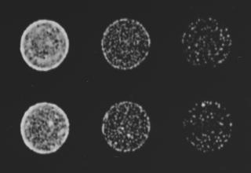
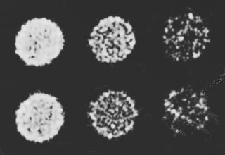
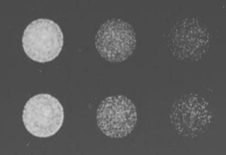
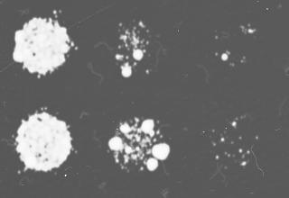
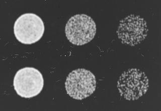
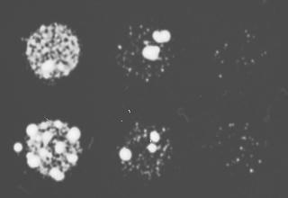

| Query_essential_gene_ID | SPBC800.13 |
| Query_essential_gene_name | cnp20 |
| Query_essential_gene_product | histone H4 variant, CENP-T ortholog |
| Suppressor_gene_ID | SPAC24B11.06c |
| Suppressor_gene_name | sty1 |
| Suppressor_gene_product | MAP kinase Sty1 |
| Mutagen | OP-BOE |
| Suppressor_mutation_type | Overexpression-plasmid |
| Strategy | Whether the double mutant can survive without the resucing plasmid |
| Allele_note | C-terminally YFH-tagged ORF OE |
A
B
C
D
E
F
A: Candidate | Selection for the OE plasmid (suppressor overexpression ON)
B: Candidate | Selection for essential gene deletion and the OE plasmid, and counter-selection against the rescuing plasmid (suppressor overexpression ON)
C: Control | Selection for the OE plasmid (suppressor overexpression ON)
D: Control | Selection for essential gene deletion and the OE plasmid, and counter-selection against the rescuing plasmid (suppressor overexpression ON)
E: Control | Selection for the OE plasmid (suppressor overexpression OFF)
F: Control | Selection for essential gene deletion and the OE plasmid, and counter-selection against the rescuing plasmid (suppressor overexpression OFF)